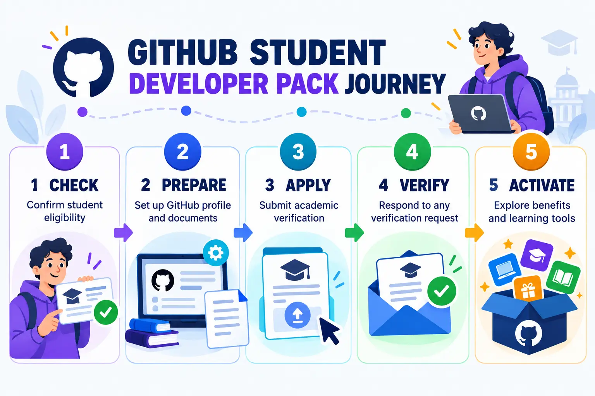
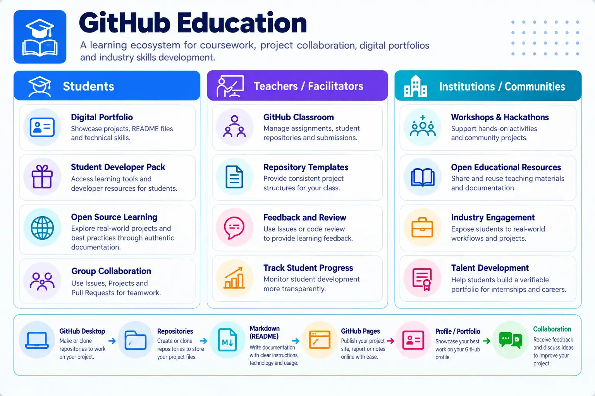

Professional tools for your learning journey
The GitHub Student Developer Pack provides verified students with free or discounted access to tools used by professional developers. Offers, duration and eligibility may change, so always read the current conditions before activating an offer.

The GitHub Education ecosystem
GitHub Education connects student verification, learning resources, classroom activities and selected professional tools. Treat the ecosystem as support for structured learning rather than a list of offers to activate immediately.

Navigate the education portal
After signing in, students should check verification status, review current benefits and read the conditions attached to each offer. Availability, credit limits and expiry periods can change, so confirm the current information before activation.
Learning outcomes
- Explain the purpose of GitHub Education and the Student Developer Pack.
- Sign in using an existing professional GitHub account.
- Prepare suitable evidence of current student status.
- Submit and check a GitHub Education application.
- Select benefits that support data engineering learning.
Check your eligibility
You should be enrolled in a degree- or diploma-granting programme, have a personal GitHub account, be at least 13 years old and be able to prove your current student status.
| Prepare | What to check |
|---|---|
| GitHub account | Use the same professional account created for this course. |
| Institutional email | Add it to GitHub, verify it and keep it private if you do not want it shown publicly. |
| Evidence | Use a current student card, class schedule, transcript or official enrolment letter. |
| Document quality | Your name, institution and current enrolment period must be readable. |
Sign in and apply
Sign in to GitHub
Open github.com/login. Enter your username or email and password, then complete any two-factor authentication request.
Add your institutional email
Open your profile menu, select Settings → Emails → Add email address, enter your institutional email and complete the verification message.
Open the Student Developer Pack
Visit education.github.com/pack and select Sign up for Student Developer Pack. Continue with your existing GitHub account.
Start the application
Open Education benefits settings. Under GitHub Education, select Start an application and choose Student.
Enter your academic details
Select your institution, choose the verified academic email and provide the requested programme or enrolment information.
Upload evidence when requested
Use a clear current document. Avoid glare, cropped dates and expired student cards. Do not share this evidence with your lecturer or upload it to a public repository.
Submit and check the status
Review the form, submit it and return to Education benefits settings to monitor the application. Approval does not have to be completed during this class.
Protect your information: Never submit your password, authentication code, recovery code, student-card image or personal document as coursework evidence.
Benefits relevant to SCST1133
| Benefit | How it can support your learning |
|---|---|
| GitHub Pro | Repository management, collaboration and professional portfolio development. |
| GitHub Copilot Student | Code completion, explanation and development assistance. You remain responsible for reviewing and testing all generated code. |
| GitHub Codespaces | A cloud development environment that can reduce local setup requirements. |
| DataCamp | Guided learning in Python, SQL, analytics and data engineering. |
| MongoDB | Experience with document databases, cloud databases and semi-structured data. |
| Microsoft Azure | Cloud services, storage, deployment and managed data platforms, subject to offer eligibility. |
| JetBrains | Professional development environments such as PyCharm and IntelliJ IDEA. |
| Datadog | Introduction to infrastructure, application and data-platform monitoring. |
| Learning platforms | Selected offers may include technical courses from Educative, Frontend Masters, Boot.dev or other partners. |
Choose benefits responsibly
Before activation
- Check the activation and expiry dates.
- Check usage or credit limits.
- Check whether a payment method is required.
- Check renewal and cancellation terms.
Recommended rule
Claim an offer only when you are ready to use it. Some benefits begin their validity period immediately after activation.
Use the Data Science & Machine Learning experience to identify tools that match this course.
Claim an offer after approval
Open GitHub Education
Sign in and return to the Student Developer Pack.
Select a relevant offer
Read the current eligibility, duration, limits and partner terms.
Connect the partner account
Use Get access or the equivalent option and complete the partner’s verification process.
Record the validity period
Note the activation date, expiry date and any remaining credit or usage limit.
Troubleshooting
| Problem | What to do |
|---|---|
| Institutional email is not recognised | Verify the email first. If the domain is still not recognised, follow the GitHub Education support instructions. |
| Document is rejected | Use a current official document that clearly shows your name, institution and enrolment date. |
| Application remains pending | Monitor Education benefits settings and your registered email. Continue the Topic 2 activities while waiting. |
| Offer is unavailable | Check whether the application is approved and read the offer’s current country, age and account requirements. |
Student checklist
- I signed in using my professional GitHub account.
- I added and verified my institutional email.
- I checked the GitHub Education eligibility requirements.
- I submitted the application or recorded why it cannot yet be submitted.
- I recorded only the status: Not started, Submitted, Pending or Approved.
- I did not share any private supporting document.
- I identified at least three benefits relevant to data engineering.
Course evidence: Submit only your GitHub username, profile URL and application status. Approval may take time and is not required to continue the remaining Topic 2 activities.